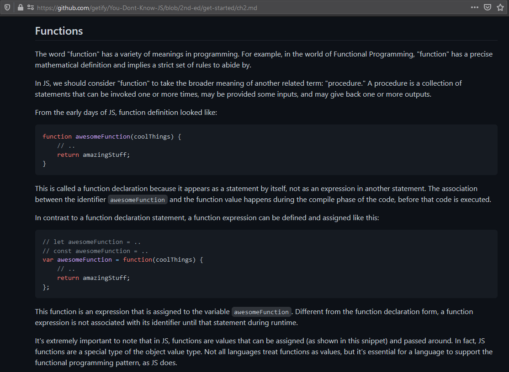

STYLE 1
STYLE 2
What are some good ways to learn JavaScript?
- You Don't Know JS (github.com/getify/You-Dont-Know-JS/blob/2nd-ed/get-started/ch2.md)
- Eloquent JS (eloquentjavascript.net/)
- Free Code Camp (www.freecodecamp.com)
- Team Treehouse (www.teamtreehouse.com)
- Codewars (codewars.com)
- CodeCloud (CodeCloud.me)
- TheCodePlayer (Learn HTML5, CSS3, Javascript)
- Javascript by Douglas Crockford (Douglas Crockford's Javascript)
- Udacity (JavaScript Basics for Beginners Course)
